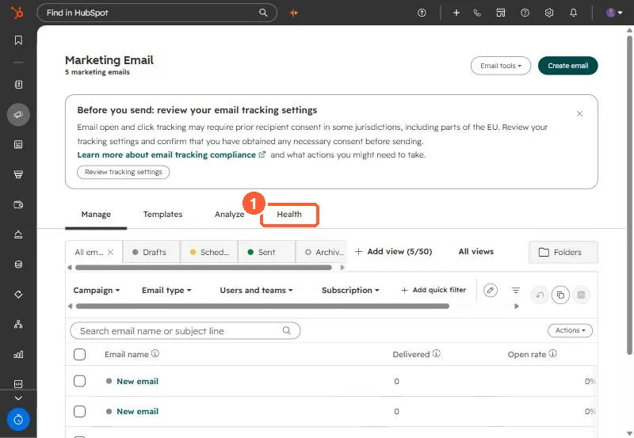
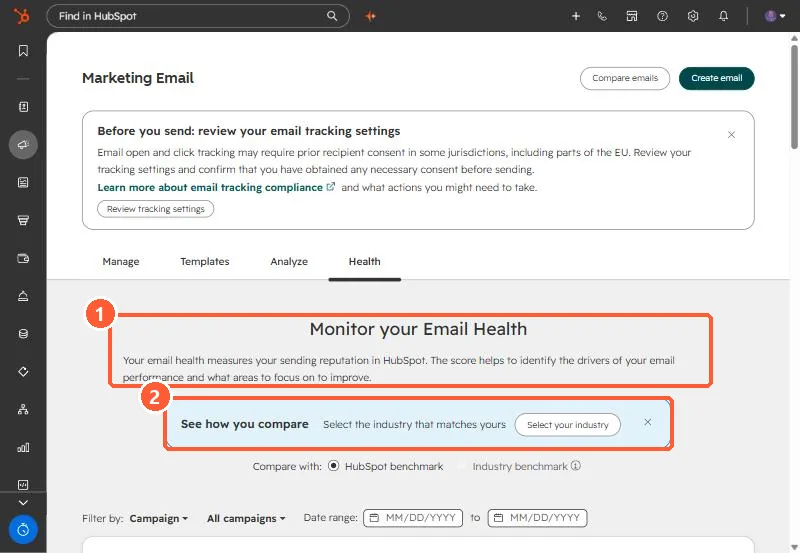

Short answer
Marketing Email, Health tab, gives a score from one to ten from the last 30 days of opens, click-throughs, hard bounces, unsubscribes and spam reports, compared to a HubSpot or industry benchmark. HubSpot's KB lists the monthly limits that can suspend marketing email: a 5% hard bounce rate, a 0.1% spam report rate (one in 1,000), and a 3% unsubscribe rate. While suspended, workflow emails do not send either.
1. Find it
Open Marketing Email and click Health.




2. What the score uses
Opens, click-throughs, hard bounces, unsubscribes and spam reports over the past 30 days, each scored against the benchmark. Select your industry in the banner to switch from HubSpot's general benchmark.
3. The limits that matter
- Hard bounce rate: 5% in a month.
- Spam reports: 0.1%, one per 1,000 emails.
- Unsubscribes: 3%.
Suspension stops all marketing email, including workflow sends. The Health tab has a How to Fix flow for suspended accounts. Most bounce problems come from old lists. See bounced contacts still marketing.